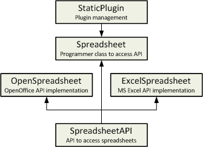

Functions4U Reference. StaticPlugin
|
|
Sometimes it is necessary to access files, devices or other services through an API that hides a lower level layer from different sources.
If this lower level source is known at compile time, these API could be implemented using virtual functions.
However if the plugin has to be defined at run time, StaticPlugin can help. This will be explained with an example:
There is a StaticPlugin demo in Functions4U_Demo package. It is a dummy API to access spreadsheet files using OpenOffice Calc or Microsoft Excel. This is the class diagram:

SpreadsheetAPI class includes just the API list of functions
Spreadsheet class implements the by default API that usually it is just a stub. However this is the class really used in the programs. Once called PluginInit(), this class will call the right API low level function.
OpenSpreasheet and ExcelSpreadsheet include the low level API and related private methods and variables.
In addition to this sample, StaticPlugin is used in OfficeAutomation to choose between Open/LibreOffice and Microsoft Office to access spreadsheets and wordprocessing files.
PluginRegister(User_class, Low_level_class, name)
Registers Low_level_class with name as a class that implements API in User_class.
PluginInit(API_var, name)
Initializes API_var (that has been declared as User_class) with Low_level_class of name name.
|
{kind=link}